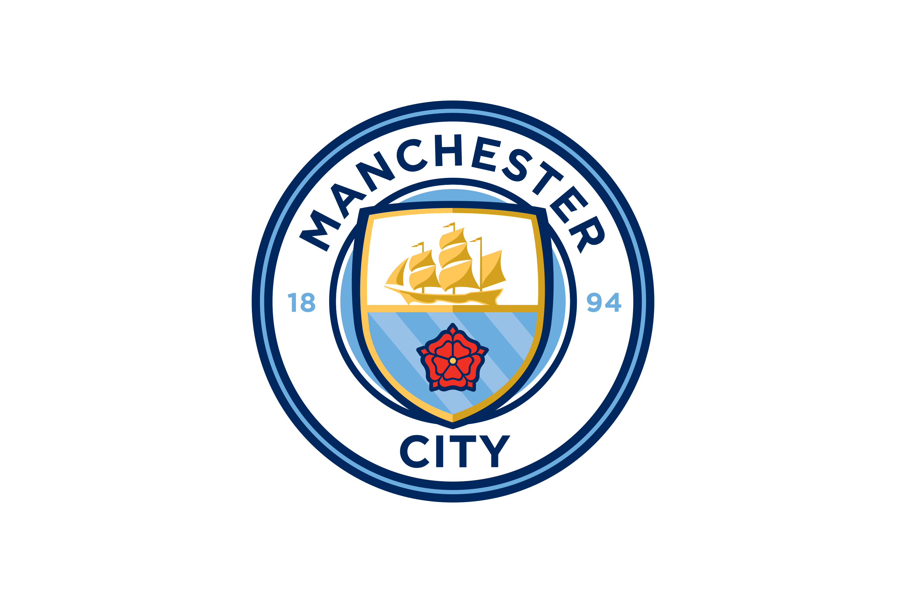

Selamat Datang di Manchester City Supported Club Indonesia
Manchester City Football Club (juga dikenal sebagai Man City) adalah sebuah klub sepak bola profesional dari Inggris yang bermain di Liga Utama Inggris. Klub ini bermarkas di Stadion Etihad, Manchester. Pertandingan pertama dimainkan pada bulan November 1880. Pada saat itu masih bernama St Mark's (West Gorton). Pada tahun 1887 berubah nama menjadi Ardwick A.F.C., dan pada tahun 1894 menjadi Manchester City F.C. Manchester City telah meraih sepuluh gelar Liga Inggris, delapan Piala FA, sembilan Piala Liga Inggris, tujuh Community Shield FA, satu Liga Champions UEFA, satu Piala Winners Eropa, satu Piala Super UEFA, serta satu Piala Dunia Antarklub FIFA. Klub ini mengalami era kesuksesan pertamanya pada akhir 1960-an hingga awal 1970-an. Pada periode tersebut, City dilatih oleh Joe Mercer dengan Malcolm Allison sebagai asisten manajer, serta diperkuat oleh sejumlah pemain seperti Colin Bell, Mike Summerbee, dan Francis Lee.